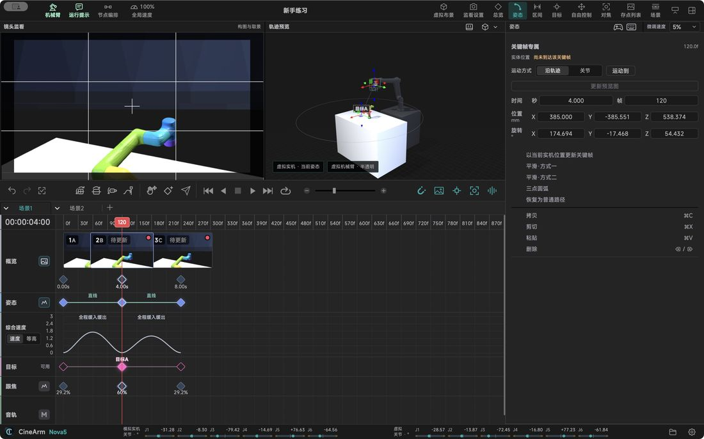

Features in detail / Timeline: picture, aim and focus on separate tracks
Timeline: picture, aim and focus on separate tracks
Picture, aim, focus and sound each get their own track, so changing one never breaks another.
OverviewRemember a shot by the frames it passed through.
PoseThe positions and the motion between them — the backbone of the shot.
TargetDecide whether this stretch keeps aiming at a point.
FocusFocus is its own line; adjust it without touching a single position.
AudioKeep the music on its own lane and time the moves to it.
RangeTwo drags set the stretch this run covers, for both preview and send.
Hiding a track only hides it — the data stays.

Describes CineArm v0.1.46.